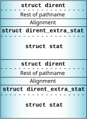

Instead of returning just the struct dirent in the _IO_READ message, you can also return a struct stat, as a potential optimization. This is basically a usage question. If your device is typically used in such a way that first readdir() is called and then stat() is called, it will be more efficient to return both. If not, it is more efficient to not return the stat information. See the documentation for readdir() in the C Library Reference for more information.
struct dirent_extra_stat {
uint16_t d_datalen;
uint16_t d_type;
uint32_t d_reserved;
struct stat d_stat;
};
if(msg->i.xtype & _IO_XFLAG_DIR_EXTRA_HINT) {
struct dirent_extra_stat extra;
extra.d_datalen = sizeof extra.d_stat;
extra.d_type = _DTYPE_LSTAT;
extra.d_reserved = 0;
iofunc_stat(ctp, &attr, &extra.d_stat);
...
}
There's a dirent_extra_stat after each directory entry:

The client has to check for extra data by using the _DEXTRA_*() macros (see the entry for readdir() in the C Library Reference.) If this check fails, the client will need to call lstat() or stat() explicitly. For example, ls -l checks for extra _DTYPE_LSTAT information; if it isn't present, ls calls lstat().